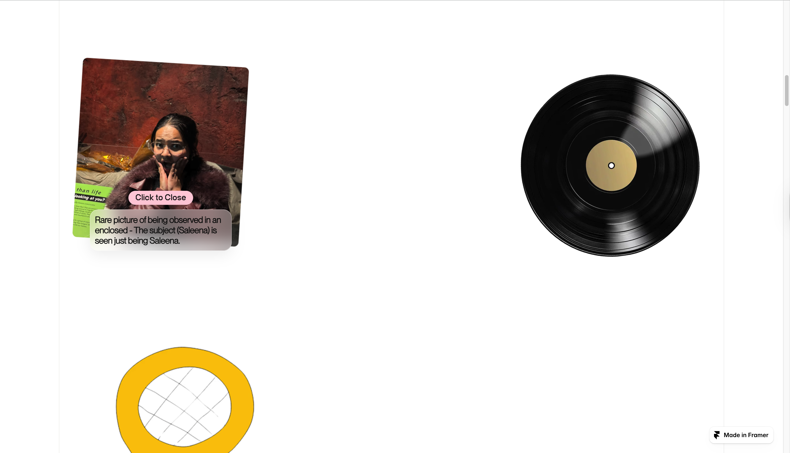
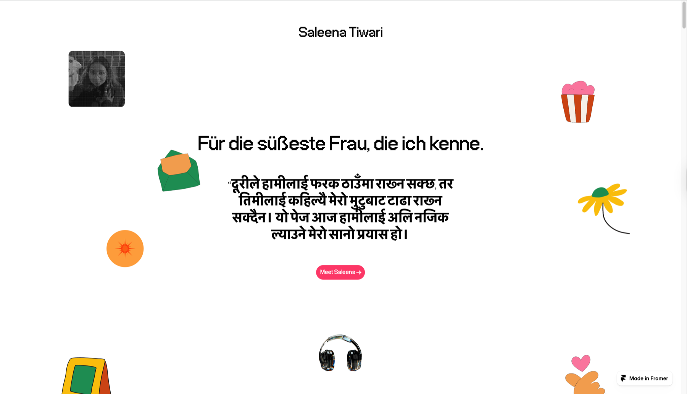

Highlights



06Case Study
A Framer website designed and written as a gift. The brief was entirely personal — make someone feel known, across English, German, and Nepali. Built with the same care as any client project.
Not every project is for an audience. Saleena is a website designed as a gift — proof that the same craft that ships products can hold something personal. The brief: make someone feel known, in more than one language, without the page feeling like a greeting card.
Three languages coexist as equals — German, Nepali, English — none of them captioning the others. Each carries its own weight. The pacing is slow and deliberate: generous space, no clutter, typography that reads rather than performs.
Some things are worth building for an audience of one.

Language
Many tongues, one voice
German, Nepali, English — in that order. None is a translation of another. Each section is written for its language, not adapted from another.
Pacing
Read like a letter
Generous space and slow reveals give words room to land. The layout does not compete with the content — it holds it.
Tone
Sincere, not sentimental
No ornament beyond what the words carry. No hearts, no confetti. The design steps back so the writing can step forward.
This project uses a colour palette of 3 colours